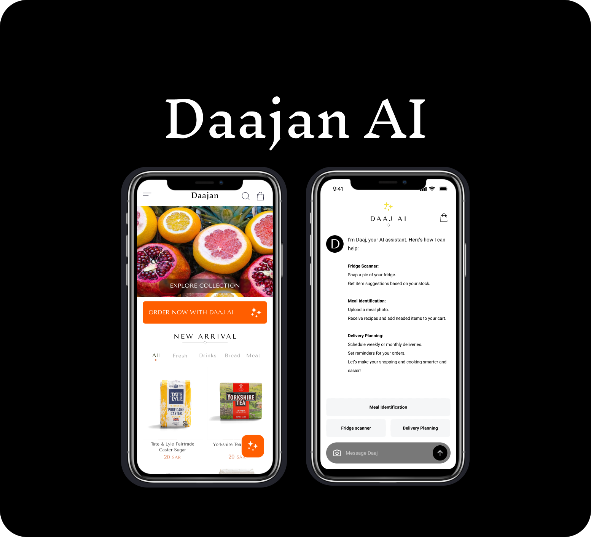
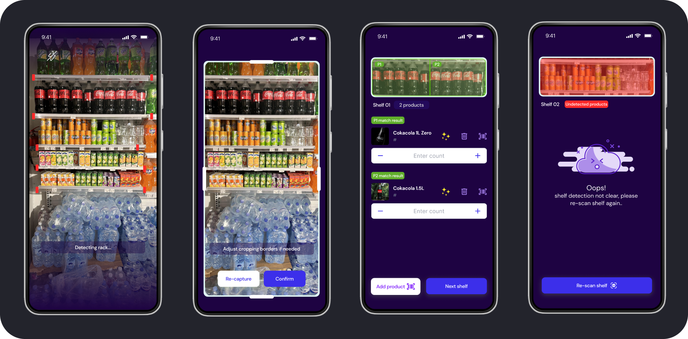
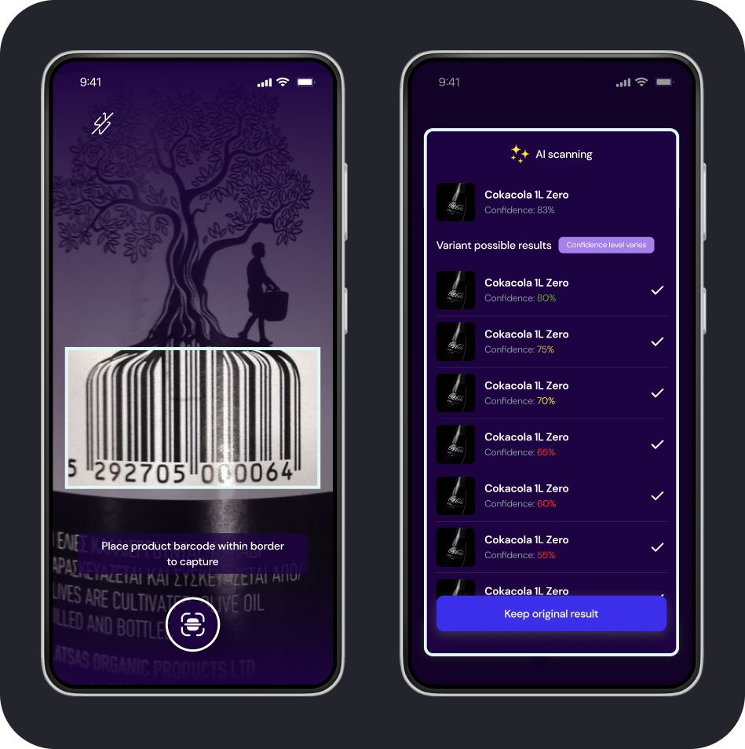
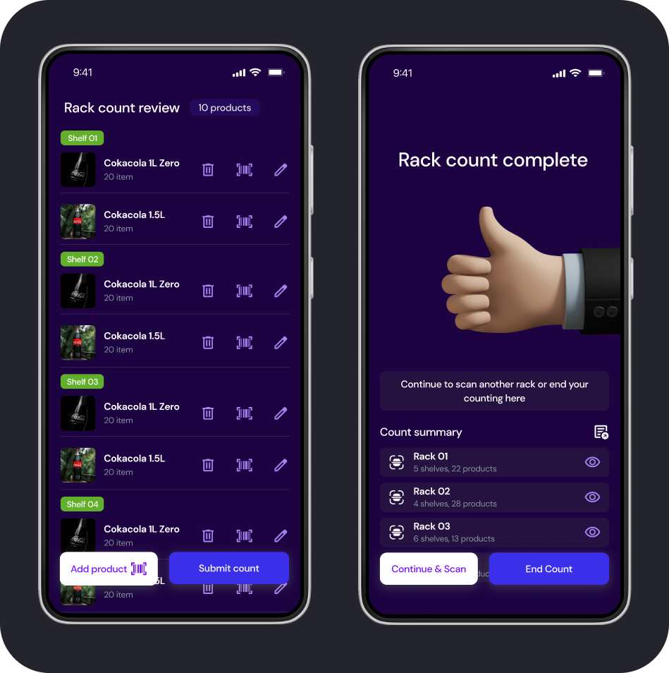
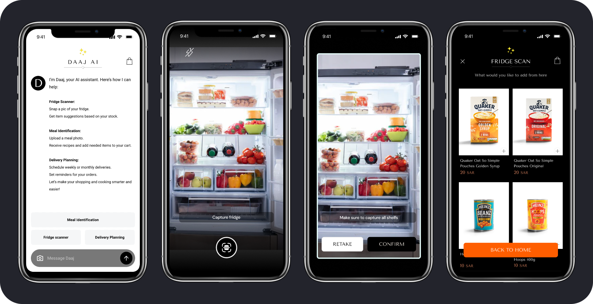
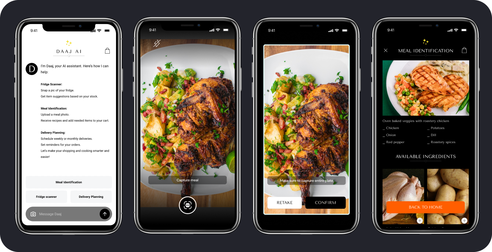
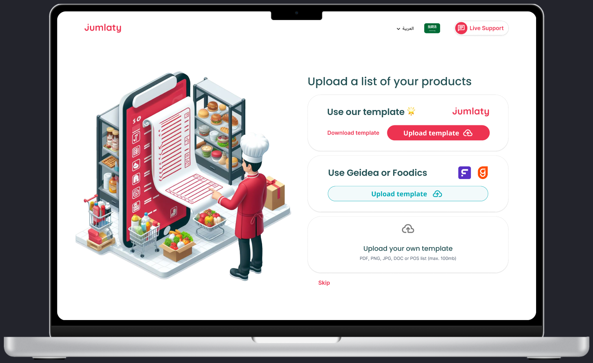
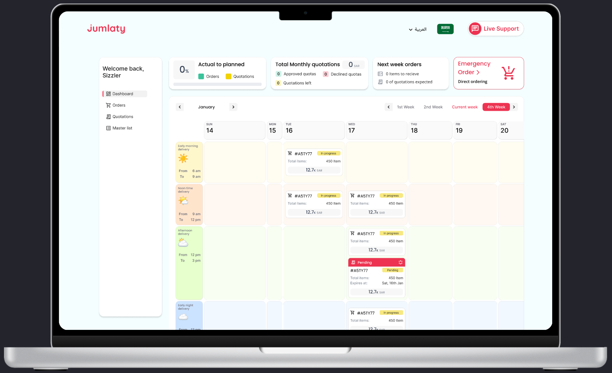

Computer vision for retail stock counting.
A phone captured a shelf, proposed product counts, exposed confidence, and required human review before submission.
1MORETHING Ventures / AI products / 2024 to 2025
Venture work starts with a premise and a short runway, not a backlog. I scoped the smallest credible experience, prototyped the key journey, and made the model's failure path part of the product decision.

01 / Executive summary
These were early product directions, not mature products I operated for a year. My job was to turn a business premise into a flow specific enough for stakeholders to evaluate: who the product served, what the first useful version included, where AI added value, and what happened when the model was uncertain.
A phone captured a shelf, proposed product counts, exposed confidence, and required human review before submission.
A fridge or meal photo became a proposed ingredient gap, then a normal basket and checkout.
Existing supplier lists entered the system without retyping, then became repeatable orders scheduled by delivery window.
Confidence, fallback, review, and recovery determined whether each AI premise still worked as a product.
02 / Product principle
Computer vision on a shelf, recognition from a food photo, and parsing a supplier list all put a model inside a real job. The important design question was not how impressive success looked. It was what the product owed the user when confidence was low.
A ranked or low-confidence result should not look identical to a verified answer.
Re-scan, barcode, manual review, or an alternative upload prevents the model from becoming a dead end.
Nothing uncertain becomes business truth before a person can inspect and correct it.
03 / Inveasy
Inveasy proposed a faster alternative to after-hours manual stock counting. The phone detected a rack, identified products, and suggested counts. I designed the capture, correction, confidence, fallback, and review journey so speed did not come at the cost of false certainty.



04 / Daaj
Most grocery products ask what the customer wants to buy. Daaj worked backwards from a more useful input: a photo of the fridge or a meal. The assistant proposed what was missing, but the familiar cart and checkout remained intact so AI acted as an entry point rather than a replacement for a trusted purchase flow.


05 / JumlatyPro
Hotels, restaurants, and catering teams repeat orders from existing supplier lists. The product direction let kitchens upload the file they already used, review the parsed master list, and schedule recurring orders by delivery window. The design phase ran in one intensive week, so the scope focused on proving the operational sequence.


06 / What this demonstrates
These are product directions and prototypes, not production products I ran at scale. All screens come from my public UXcel showcases. Inveasy and Daajan name 1MORETHING Ventures directly. The JumlatyPro showcase credits NOMU Group, the company behind the product, while the work sits in the same 1MORETHING period.